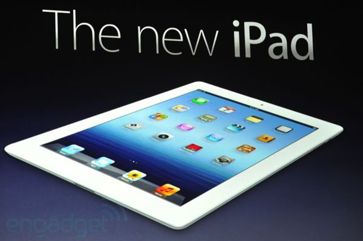

|
Members: |
iPad Apps for StudentsBy john on Tuesday, June 8th, 2010 The amount of and variety of technology available today is incredible. Certainly the iPod, iPhone, and now the iPad have changed the way college students and university students communicate and work in order to be successful in school. Of course everyone is aware of Apple’s applications or “apps” as they have come to be referred to but not everyone is aware that there are a few apps that are great tools for college and university students. Read More
Pokhara CityPokhara Sub-Metropolitan City (Nepali:Pokhara Upa-Mahanagarpalika) is the second largest city of Nepal. Pokhara is city of close to 350,000 inhabitants in western Nepal located at 28.25°N, 83.99°E, and is situated 198 km west of the capital Kathmandu. It is the second largest city of Nepal and also serves as the headquarters of Kaski District, Gandaki Zone and the Western Developmental Region. Pokhara is one of the most popular tourist destinations in Nepal. Three out of the ten highest mountains in the world are situated within 50 miles (linear distance) of the city so that the northern skyline of the city offers a very close view of the Himalayas. Due to its proximity to the Annapurna mountain range the city is also a base for trekkers undertaking the Annapurna Circuit through the ACAP region. Read More Back to Top
Windows 8 Will Come In Three FlavorsFrederic Lardinois Microsoft just announced that Windows 8 will come in three different flavors: Windows 8, Windows 8 Pro and Windows RT. Windows 8 will be the mainstream consumer edition. The Pro version will bring a number of features that most mainstream consumers don’t necessarily need to Microsoft’s next operating system. These include encryption, virtualization, PC management and domain connectivity. Both Windows 8 Pro and the mainstream consumer edition will be available in 32 bit and 64 bit versions. Microsoft will also offer an enterprise version of Windows 8. Microsoft has not shared any details about the pricing of these editions yet. Read More Back to Top
Google's ex-CEO gets $101MSAN FRANCISCO (AP)Shifting from Google's CEO to executive chairman proved to be lucrative career move for Eric Schmidt. Google Inc. awarded Schmidt a compensation package valued at $101 million last year, according to a Friday regulatory filing. The amount is 322 times higher than the $313,219 package that Schmidt received in 2010 during his final full year as the Internet search leader's CEO. Schmidt, 56, ended a decade-long stint as Google's CEO last April and turned over the job to Google co-founder Larry Page. Shortly before the change in command, Google gave Schmidt stock and stock options valued at nearly $94 million, according to the company's proxy statement. Google had designed the stock and stock option package to be worth $100 million, but the compensation formula spelled out by securities regulators arrived at a slightly different calculation. To top it off, Google raised Schmidt's salary from $1 annually as CEO to $1.25 million as executive chairman. His 2011 salary ended up being $937,500 because he spent the first three months of the year in the lower-paying job as CEO. The rest of Schmidt's 2011 compensation consisted of a $6 million bonus and perks worth nearly $264,000. Schmidt deposited half of his bonus last year in a company plan that can defer payment for up to five years. Page's compensation package totaled $1 last year, consisting solely of a nominal salary. He has maintained a $1 salary since 2005, although in some years he has accepted the Google's companywide holiday bonus. That's what happened in 2010 when Page's pay package totaled $1,723. Weekly paychecks, annual bonuses and stock options haven't been essential to Schmidt or Page since Google's initial public offering of stock in August 2004. That IPO turned them, along with Google co-founder Sergey Brin, into multibillionaires who are perennials on Forbes' list of the world's richest people. Forbes' latest rankings estimate Page, 39, and Brin, 38, are each worth nearly $19 billion. The magazine pegs Schmidt's wealth at nearly $7 billion. Read More Back to Top >
PhoenixMobile 2.0PhoenixMobile 2.0 makes it even easier to juggle school, work, and family. Now you can use your smartphone to stay connected with your class, anytime, anywhere. Read More  Back to Top
Earth captured in time-lapse videoBy Dara Kerr | April 18, 2012The scientists aboard the International Space Station (ISS) "have the best view in the solar system", videographer Alex Rivest says. Maybe that's why he created this time-lapse video of exactly what the scientists see, so that people around the world can also gaze at the same view.Hovering close to Earth and completing 15 orbits per day, the ISS provides dozens of photos and videos of the views that it records — the same stunning scenes captured in Rivest's video. The habitable satellite tracks rolling scenes of the multi-coloured planet, with images of long, winding rivers, high mountain ranges, expansive oceans and cloud-covered skies. Rivest released the video this past week to coincide with the 51st anniversary of Soviet cosmonaut Yuri Gagarin's first flight into space. Gagarin's 108-minute orbit around the Earth was an event that awed the world and accelerated the space race between the Soviet Union and the US. Last week was also the 31st anniversary of the inaugural launch of NASA's space shuttle program.With the end of the Cold War, the ISS project was created as a collaboration among the American, Russian, Japanese, Canadian and European space agencies. It was launched in 1998, and has been continually inhabited by scientists since 2000. Back to Top
|
{kind=link}
{kind=link}